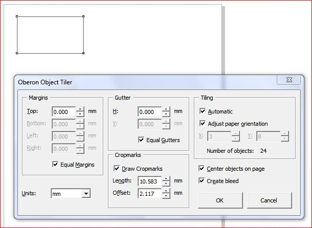

Oberon Object Tiler
Des425 / 20.04.2010, 01:09/00:41
Форум:
Макрос размещает максимально количество объектов на листе, выставляя метки и т.д. и все это можно настраивать!

Автора к сожалению не знаю! (постоянно пользуюсь этим макросом, рекомендую)
Ну раз Oberon, значит автор Alex.
отличный скрипт, постоянно им пользуюсь при печати визиток, флаеров..
Недавно искал подобную штуку как скрипт или макрос, проще и удобно, чем в принт превью.
Спасибо огромнейшее автору за скрипт и просто человеческое спасибо.
Подскажите, кто сталкивался или хотябы выставляет метки реза при помощи "Oberon Object Tiler"
В приложении файл, где есть два варианта расстановки меток: 1) Когда метки реза выставлены за пределы по формату запечатываемой области с припусками по 2 мм по периметру. 2) Когда мети реза выставлены по формату А3 (297х420) и заходят во-внутрь. Так вот мне нужен как раз второй вариант расстановки меток, но вот что то не выходит. Отдельно приходится вначале выставлять метки реза по формату после резки А3 (297х420), а потом уже оставивь метки реза, отдельно увеличить формат А3 по 2 миллиметра по периметру, чтобы получился как раз тот самый второй вариант.
Может как то это делается автоматом при помощи этого же макроса или я ошибаюсь.
Ну, вот! Написали, разрекламировали, а где ссылка?
Афи, раньше была. Держи
Спасибо!
Скачал, поставил, попробовал. Полезная вещь.
Не хватает только одного. Возможности, которая есть в окне Print Preview. Расстановки меток порезки так, как на изображении.
Для этого есть другие макросы. Искать надо.
Расстановка меток как на изображении делается стандартными средствами спуска CorelDRAW.
Да это я знаю... Захотелось вот сделать нестандартным способом. Макрос довольно универсален, жалко, что нет вот еще такой маленькой возможности. Тут же именно и рассматривается альтернативное стандартным средство...
Страницы